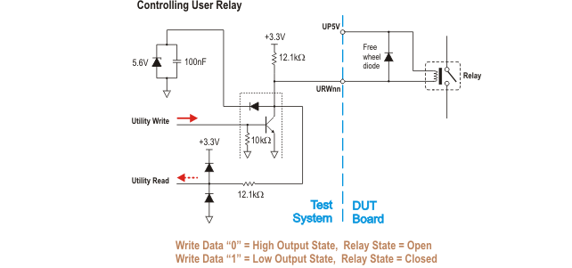
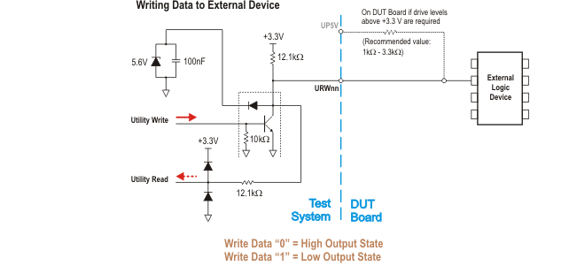
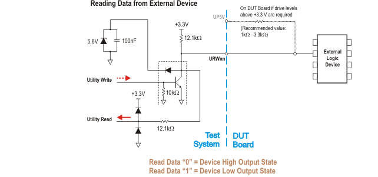

Utility line example circuits
Below are a few examples of how to interface utility lines to circuitry on your DUT Board.
Internal pull-up resistors of utility lines (V93000 systems)
All utility lines feature internal pull-up resistors that are tied to +3.3 V, +5 V or to both voltages. The configuration of the pull-up resistors depends on the test head type and the type of the wiring board. For more information, refer to table Internal pull‑up resistor of utility lines in Utility line characteristics.
The internal power supplies, to which the internal pull‑up resistors of utility lines are connected, are independent of the utility power supplies and cannot be switched off.
Therefore, the current through the internal pull‑up resistor of deactivated utility lines and the connected circuitry on the DUT board can push up the output voltage of a switched‑off utility power supply to an undefined value.
For more information, refer to Common characteristics of all utility power supplies in Utility power supplies.
Controlling user relay on a DUT board (V93000 systems)

Writing data to a logic device on the DUT board (V93000 systems)

Reading data from a logic device on the DUT board (V93000 systems)

Recommendations for driving solid state devices
The following recommendations apply to all types of interface circuitry for solid state devices.
- Buffer
- A buffer, for instance the non-inverting octal buffer 74HC244 shown below, is recommended
to adapt the switching characteristics of the utility line to the
requirements of the device. The buffer
- can translate the output levels of the utility line to TTL compatible levels or other levels, or
- can drive current in high state if a version with push-pull output is selected, and
- can be used as inverter.
The buffer, or alternatively an external pull-up resistor of about 1 kΩ is required for high-sensitive solid state devices with low forward voltages that are supplied by +5V: The current through the internal 3.3 V pull-up resistor of the utility lines can keep such a device turned on after the utility line has been switched off.
Functional changes
- Introduced before SmarTest 6.3.2
- SmarTest 7.2.0: External utility power introduced